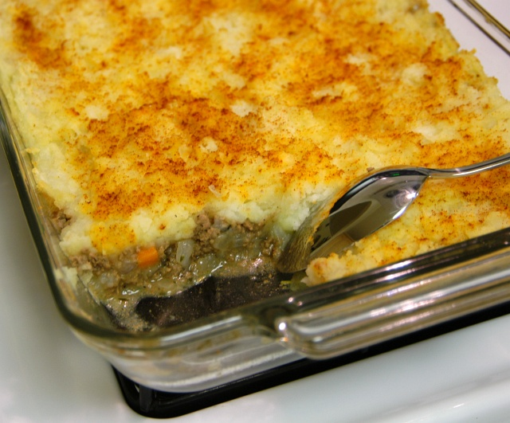
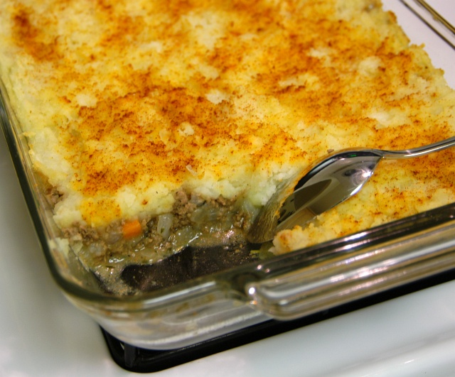

The best Shepherd's Pie I ever did taste was made by my girlfriend. In the following article, I will share with you the top secret homemade recipe, so you can also enjoy the best Shepherd's Pie ever. First off, let's make a list of what you will need to create this deliciousness.
Ingredients:
- Ground Beef
- Green Beans
- Tomato Paste
- Brown Potatoes
- Cheddar Cheese
- An oven-safe Casserole Pan
- Cook the ground beef on medium heat in a skillet until fully cooked. Drain and Set aside.
- Wash, peel, and chop down the taters.
- Boil the taters. Then mash the taters (add butter, milk, salt, pepper to taste). Set aside.
- Get your Casserole Pan, and put a layer of mashed taters (about half of them) at the bottom.
- Put all of the ground beef in one layer on top of the taters.
- Get your green beans, and put them in a layer on top of the ground beef.
- Put the tomato paste in another layer on top of the green beans.
- Put the other half of the taters on top of the green beans.
- Sprinkle the cheddar cheese on top of the taters.
- Preheat oven to 350 degrees, cook for 35-40 minutes. Let cool for 5 minutes. Bada bing, bada boom.
 
